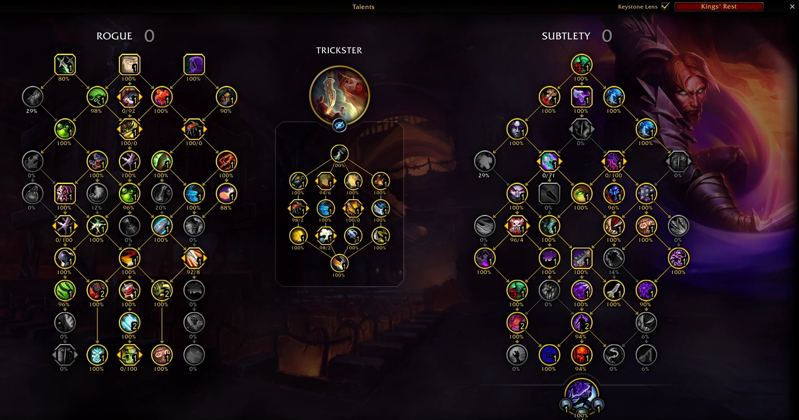

Getting started
Everything you need, from download to seeing the top players' talents on your own talent window.
1. Install
The newest version · Windows 10 and 11
-
Download
KeystoneLens-Setup-<version>.exeand run it. It installs for your Windows user only, so it doesn't need admin rights, and adds Start menu and desktop shortcuts. - If Windows shows "Windows protected your PC", click More info, then Run anyway. This appears because the app isn't code-signed yet.
- Start Keystone Lens from the Start menu or desktop.
No install? The portable exe runs from anywhere, for example a USB stick. It doesn't update itself; it tells you when a new version is out.
Checking a download (optional)
Every release lists the SHA-256 checksum of its files in SHA256SUMS.txt. To compare, open
PowerShell in your Downloads folder and run:
Get-FileHash .\KeystoneLens-Setup-<version>.exe
The hash it prints should match the line for that file in SHA256SUMS.txt.
2. Your first search

- Click your class, then your spec.
- Choose the Region (World, or one region), how many Players to look at (top 25, 50 or 100), and Keys from: Current patch (auto) is right almost always. Keys since date… ignores keys played before a tuning hotfix.
- Click Inspect.
The first search takes 1–2 minutes, a rarely played spec up to about 5. Later searches are much faster, and your recent searches appear at the top of the picker. The app opens your last results again when you start it.
3. Reading the results
The results have tabs at the bottom: Talents, Gear and Players. The bar at the top filters all of them:
- Dungeon
- Each player's best key in one dungeon instead of all dungeons.
- Hero tree
- Only the players of one hero tree.
- Trends
- How pick rates changed since an earlier run of the same search.
Refresh fetches the newest data, New search goes back to the class picker.
Talents

- Every talent shows the % of players who pick it. Choice nodes show the split, for example "80 | 20".
- The builds list groups players with nearly the same talents, for example "Build 1 · Trickster · 35 players", and shows how each build differs from the majority.
- Copy copies a build's import string. In game, open your talents, choose Import in the loadout menu, and paste it.
- Save image and Copy image export the tree, for example for Discord.
Gear
- The overview at the top shows the secondary-stat priority, the races the players play, the top enchant per slot, gems, embellishments, tier pieces and weapon setups. Click a race for its racial abilities.
- Below it, every slot lists the items used and by how many players, with stats, enchants, gems and where the item drops. Hover an item for its in-game tooltip.
Players
- Every player in the sample with race, score, key, hero tree, build and item level. Click a column to sort, or search by name or realm.
- Click a player to see their own talent tree and gear. Copy build copies their import string.
4. Compare with your character
Click Compare with my character at the top right of the results and load your character one of three ways:
- Look up on raider.io
- Pick the region, start typing your realm, enter your character's name, and click Load character.
- Paste from SimulationCraft
-
With the SimulationCraft addon, type
/simcin game, copy all of the text and paste it. This uses exactly what you have on, including crafted stats, and lets you compare your saved talent loadouts too. - From the game addon
- With the Keystone Lens addon installed, your characters are listed under "From the game addon". One click loads them.
Then:
- On the tree, ✔ marks your talents, a red ring a popular talent you skip, and an orange ring an unusual one you take.
- Each gear slot shows your item and how many top players use it.
Characters you load are remembered. Stop comparing is in the same window.
5. The game addon
The addon puts the same numbers on your talent window and in a /kl window in game.
Install it
-
In the app, open ⚙ Settings (top right) and find Game addon. The app
finds your World of Warcraft folder by itself; if it doesn't, click Choose… and pick the
World of Warcraftfolder. - Click Install addon.
- Look at your spec in the app. Every Mythic+ spec you look at is added to the addon, and the list under "Specs in the addon" shows which ones it has.
-
Start the game, or type
/reloadif it's running. If Keystone Lens isn't in the game's AddOns list yet, exit the game completely and start it again.
Using it

- Talent window: the pick rate is under every talent. A red frame marks a popular talent you skip, an orange frame a rare one you take. The switch in the window's title row changes between all dungeons and each dungeon.
-
/kl(or the addon button by the minimap): the top players' gear, their stats next to yours, their races, and the popular builds. Each build has Copy string and Show on talents, which frames its differences on your talent window. - Item tooltips say how many top players of your spec use the item.
More commands: /kl talents and /kl tooltips turn those parts on or off,
/kl options opens the settings, and /kl status shows what data the addon has.
Keeping it up to date
-
New data loads when you log in or type
/reload. With "Keep my characters' specs fresh" on, the app updates your characters' specs once a day in the background. -
When an app update comes with a newer addon, the app updates the addon it installed. Type
/reloadafterwards. -
Your characters' talents and gear are saved for the app when you log out or
/reload, for "Compare with my character".
KeystoneLens and KeystoneLens_Data folders
from World of Warcraft\_retail_\Interface\AddOns.
6. Updates
The installed app looks for new versions when it starts. It downloads them in the background and shows Restart to update in the title bar; the update is also installed when you close the app.
In ⚙ Settings → Updates you can choose Automatic (recommended), Only tell me or Off. The portable exe only tells you about new versions and opens the download page.
7. Warcraft Logs (optional)
The Damage tab (damage and healing per dungeon and key level, with your own logged runs) and Raid mode (the top 100 kills of your spec on every boss) need your own free Warcraft Logs API client. Warcraft Logs doesn't allow keys to be built into open-source apps, and every key has an hourly limit, so these are off until you turn them on.
- In Keystone Lens, open ⚙ Settings → Warcraft Logs and tick Damage numbers and Raid mode. Read the short explanation and click Turn on.
- Sign in at warcraftlogs.com and open warcraftlogs.com/api/clients.
-
Click Create Client. Give it a clear name, for example
Keystone Lens - YourName. Enterhttp://localhostas the redirect URL and leave Public Client unticked. - Copy the client ID and secret into ⚙ Settings → Warcraft Logs and click Save & test.
The secret is stored only on your PC, encrypted for your Windows account, and is only ever sent to warcraftlogs.com. While the features are off, the app never contacts Warcraft Logs.
8. Problems and questions
- The addon says it has no data
-
Look at your spec in the app (Mythic+), check that it's listed under ⚙ Settings → Game addon → "Specs in the
addon", then type
/reloadin game. - There is no Damage tab or Raid mode
- They are optional: see Warcraft Logs.
- A search is slow
- The first search reads many pages of top keys and can take a few minutes. They're kept for 6 hours and shared by every spec, so later searches are much faster.
- Where does the app keep its files?
-
In
%APPDATA%\Keystone Lens: your settings, saved characters and the cache. Clear cache in ⚙ Settings empties the cache. - Uninstalling
-
Windows Settings → Apps → Installed apps → Keystone Lens → Uninstall. To remove your settings too, delete
%APPDATA%\Keystone Lensafterwards. - Reporting a bug
- Open an issue on GitHub with your version (⚙ Settings → About), the spec and the tab. Never post your Warcraft Logs secret.